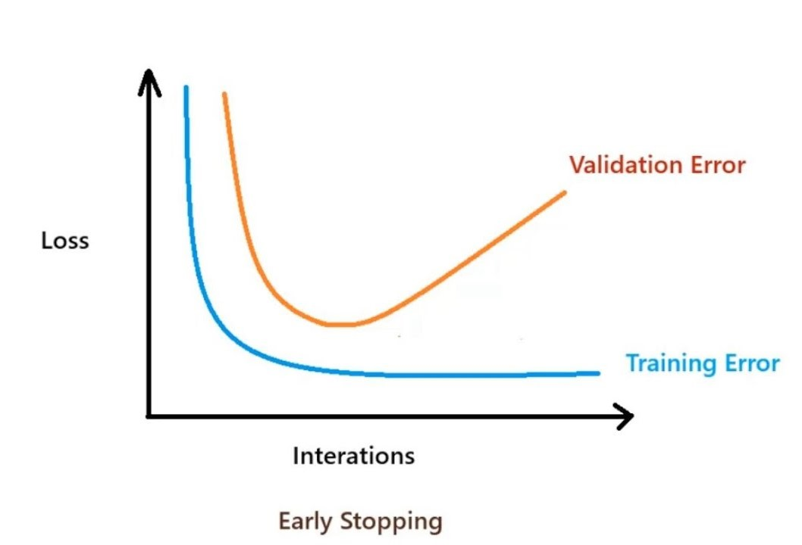

from torchvision import transforms
transform = transforms.Compose([
transforms.RandomHorizontalFlip(),
transforms.RandomRotation(10),
transforms.ToTensor(), # convert the image to a tensor
transforms.Normalize((0.5, 0.5, 0.5), (0.5, 0.5, 0.5))
])Good Practices for Neural Networks
There are many aspects to consider when working with neural networks, from the choice of architecture to the choice of hyperparameters. It is easy to get lost in the details and end up with a model that doesn’t perform well. Here are some good practices that act as a guide when working with neural networks:
Master your data
Get acquianted with your data: Understand the characteristics of your data, such as its size, shape, and distribution. Try to understand the meaning of the features and how they’re measured. This will help you to choose the right architecture and hyperparameters for your neural network. If we don’t, we might end up trying to predict height in feet using height in meters, which is not the best use of a neural network.
Data Cleaning: Remove or correct any errors or inconsistencies in the data. This includes handling missing values, removing outliers, and correcting any incorrect data entries.
Feature Normalization: Scale the input data to have a mean of 0 and a standard deviation of 1. This helps to speed up the convergence of the optimization algorithm and improve the performance of the neural network.
Data Augmentation: Increase the size of the training dataset by applying transformations such as rotation, scaling, and flipping. This helps to reduce overfitting and improve the generalization of the neural network.
The transforms module in PyTorch’s torchvision module provides a variety of data augmentation techniques that can be easily applied to the input data as shown below.
Accept your data limits
Sometimes we don’t have enough data to train a neural network effectively. In such cases, it’s better to use simpler models, collect more data, or change architectures (discussed later).
Try to have more datapoints than parameters in your model. This will help to prevent over/underfitting and improve the performance of the neural network. We can get the number of parameters in a model using the follwing line of code:
sum(p.numel() for p in model.parameters() if p.requires_grad)- If you have a large dataset, you can use techniques such as data augmentation to artificially increase the size of your dataset. This can help to improve the performance of the neural network and prevent overfitting. The rotation transform significantly (although artificially) increases the number of images in the dataset, which can help to improve the performance of the neural network.
Training efficiently
- Use the GPU if possible: it can significantly speed up the training process. We first need to check if a GPU is available using the
torch.cuda.is_available()function. If it is available, we can move the model and the data to the GPU using the.to()method. Be ware, that you need to move the model and the data to the same device, otherwise you will get an error.
import torch
from torch import nn
# check for gpu availability
device = torch.device("cuda" if torch.cuda.is_available() else "cpu")
# dummy model and data
model = nn.Linear(32, 64)
data = torch.randn(1, 3, 224, 224)
# send model and data to gpu
model.to(device)
data = data.to(device)Tracking the training process: Keep track of the loss and accuracy during training to monitor the progress and detect any issues. We can use the
torchmetricslibrary to calculate the accuracy and thetorch.utils.tensorboardlibrary to log the metrics to TensorBoard for a more detailed progress summary.However, a key factor to consider is awareness of the progress done so far. The
tqdmlibrary can be used to display a progress bar during training, which can help to keep track of the progress and make it easier to monitor the training process.
from tqdm import tqdm
# dummy data loader
data_loader = range(2)
# dummy training loop
for epoch in tqdm(range(10)):
for batch in data_loader:
...- Regularization: Use techniques such as weight decay (L2 regularization) to prevent overfitting. The optimizer will handle this for you if you use the
weight_decayparameter.
optimizer = torch.optim.Adam(model.parameters(), lr=0.001, weight_decay=0.01)- Save your model’s weights: at the end of each epoch or after a certain number of epochs. This will allow you to resume training from the last saved state in case of an interruption. This way, we don’t have to start from the beginning every time we run our code. PyTorch has a nice interface for saving and loading models:
# save model
torch.save(model.state_dict(), 'model_weights.pth')
# load model
model.load_state_dict(torch.load('model_weights.pth'))Validation
It is often a good idea to further split the training set into a training set and a validation set. The training set is used to train the model, while the validation set is used to measure the model while training. This can help to prevent overfitting and improve the performance of the neural network.
- Early stopping: Stop training when the performance on a validation set stops improving, to prevent overfitting. Unfortunately, there is no built-in function in PyTorch to do this, but we can implement it manually by keeping track of the best validation loss and stopping training when it stops improving. There is an excellent tutorial on how to do this here
The follwing image shows an example of the importance of early stopping:

- Hyperparameter tuning : Use a validation to tune hyperparameters, such as learning rate, batch size, and number of layers. This can help to improve the performance of the neural network. Note that given training times, this is not always feasible and should only be performed if the dataset is large enough and a a minimal loss is of the utmost importance. Why not use the test set for this? This is data leakage, which results in the model beeing overfit to the test set. It’s best to use the training set to train the model, the validation set to tune hyperparameters, and the test set to evaluate the performance of the model.
Choose your achitecture wisely
Take your time to make sure all the components of your network work correctly. It would be a shame to spend a lot of time training a network only to find out that the batch dimension and feature dimensions got swapped at some point.
Use a simple architecture to start with. It is often easier to debug and understand a simple architecture than a complex one. Once you have a working model, you can start experimenting with more complex architectures.
Use a deep architecture when necessary. Deep architectures can capture complex patterns in the data, but they are also more prone to overfitting. Therefore, it is important to use techniques such as dropout and early stopping to prevent overfitting.
Use the appropriate architecture for the task at hand.Convolutional Networks are best for images, while Recurrent Networks and LSTM’s are best for sequences (both will be covered later).
Use transfer learning when possible. Transfer learning involves using a pre-trained model on a related task as a starting point for a new task. This can save a lot of time and resources, and can also lead to better performance.
Use a well-known architecture when possible. Well-known architectures have been tested and validated by the community, and are likely to be more robust and efficient than custom architectures. Don’t chase the latest and greatest, unless you have a good reason to do so. Examples of such architectures are RBF Networks, Group-CNN’s, ResNet, etc.
Be open to other machine learning models. Neural Networks are not the only game in town. Other models such as SVM’s, Random Forests, Decision Trees, etc. can also be used for regression and classification tasks. It’s important to understand the strengths and weaknesses of each model and choose the one that is best suited to the task at hand.
These are only some of the best practices for machine learning. There are many more, and it’s important to stay up-to-date with the latest research and developments in the field.